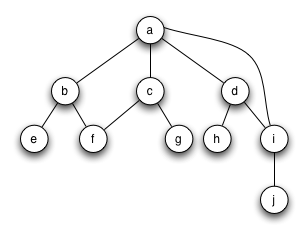
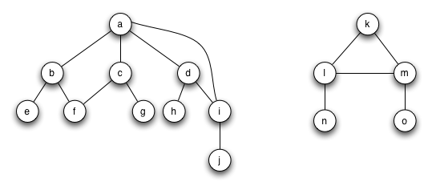
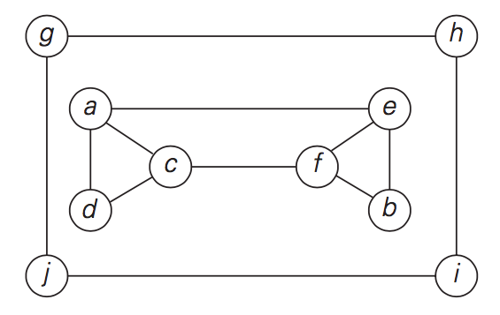

CMPT 306 Algorithms & Data Structures
Fall 2017
Lab 4
Breadth and Depth-First Searches
Due Date: 11:59 PM on Wednesday,
September 27, 2017.
How Labs are Managed and
Graded
1. Select a partner on
your own and
sign up. The rules are you must pair with a new partner each week.
2. Work as a pair to
complete the lab. At the end of the lab period, make sure to share
all files with each partner.
3. Each partner will
submit the lab separately. (Submission instructions are described
later in this lab.)
4. If you do not finish
the lab during the lab period, you may either get together outside
of class to complete it, or complete it on your own. If you choose
to complete it on your own, be sure to indicate this in your
submission.
Overview
This lab will involve designing breadth-first and depth-first
searches/traversals for an unweighted, undirected graph. Be sure to
read the graph handout as well as notes on graphs prior to beginning
this lab.
You should implement DFS using both recursive method and stack. You should implement BFS using queue. Please review the psedocodes of these three algorithms in the graph handout.
The output of the vertices should follow alphabetical order.
Your code should be able to track back edge (DFS) or cross edge (BFS). Use (vertex) to represent this vertex is incident to the back or cross edge. The output should be like this:
Please input filename:graph-3.txt
DFS Traversal
DFS using recursive: acd(a)fbe(a)(f)(e), ghij(g),
DFS Traversal
DFS using stack: acd(a)fbe(a)(f), ghij(g),
BFS Traversal
BFS using queue: acde(d)f(c)b(f)(b)(e)(f), ghji(i)(j),
Hints
Adjacency list representation of an undirected, unweighted graph
(described in graph handout.)
The data of three graphs are stored in three txt files.
Examine Python documentation for hints on how to use a Python list as a
queue or a stack.
You should sort all children or vertices.
You should use additional dictionary to record the relationship of parent and child.
Download
(graphs)graph-1.txt
graph-2.txt
graph-3.txt
- (Jupyter Notebook User) GraphAlgorithms.ipynb
- (Eclipse User) GraphAlgorithms.py
The Graphs
Graph 1.

Graph 2.

Graph 3.
